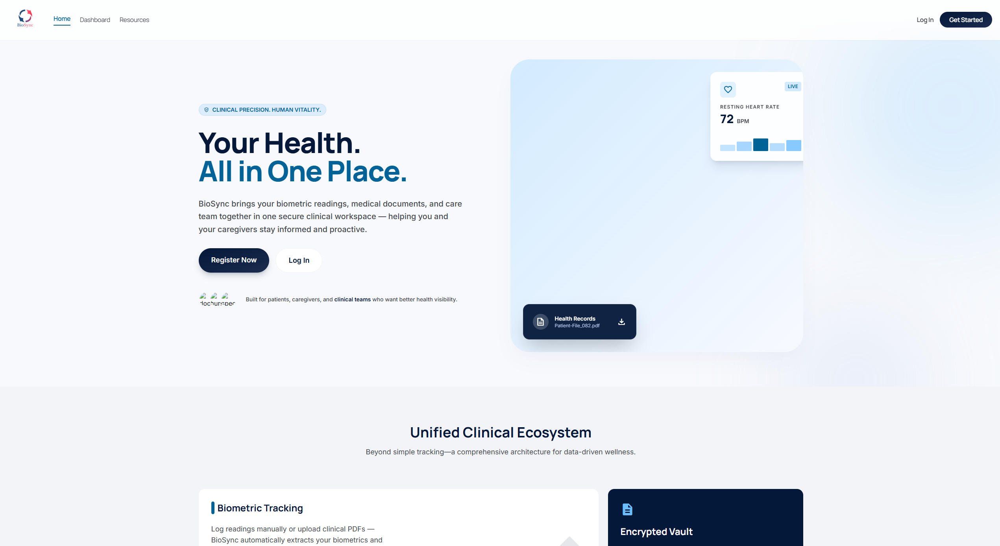

About
BioSync consolidates health data collection, storage, and analysis into a single accessible platform. Patients upload medical documents and log readings — heart rate, blood pressure, blood oxygen, glucose, and more — and the app extracts biometric data automatically, tracks trends over time, and alerts when values fall outside safe ranges.
Caregivers connect to patients through a secure, patient-initiated linking system using a unique code — no shared passwords, no HIPAA violations. They get a role-scoped view of the patients they support: readings, alerts, and documents, without access to anything beyond what their role requires.
The project was inspired by a real problem: team lead Sarah Ayres is an active caregiver whose mother is a veteran. Managing care across VA and local hospital systems — where medication changes take days to communicate and no tool adequately supports the caregiver role — directly shaped every feature in BioSync.

Features
📄 PDF Lab Report Parsing Done
Upload a report and biometric readings are extracted and stored automatically.
📊 Health Trend Charts Done
Visualize heart rate, blood pressure, SpO₂, glucose, and more over time.
🔔 Smart Health Alerts Done
Age- and sex-adjusted notifications flag readings outside safe ranges.
🔗 Caregiver Portal Done
Caregivers link to patients via a unique code — no shared credentials needed.
📁 Document Hub Done
All uploaded medical documents organized and accessible in one place.
📈 Baseline Comparison Done
Detects meaningful shifts by comparing recent readings to your historical average.
📤 CSV Export Done
Download biometric history as a CSV — per metric or as a full all-readings report to share with providers.
Tech Stack
Try It Yourself
BioSync runs in a free GitHub Codespace — no local setup needed.
1. Click Code → Codespaces → Create codespace on main2. In the terminal: bash setup.sh3. Then: bash run.sh4. Open the forwarded port link — BioSync loads in your browser5. Register at /auth/register, then log in at /auth/login
The Team
Sarah Ayres
Joshua Eckman
Myra Williams
What I Learned
Building BioSync taught me more about the gap between building something and building something right than any course work before it. The parts I'm most proud of are the ones that came from the second pass — the caregiver linking system, the session management, the file scoping — because those took the most deliberate thought and would hold up in a real environment.
Future Implications
📱 Native iOS & Android Apps
Dedicated mobile applications for both platforms connecting directly to wearable devices via Bluetooth.
⌚ Device Integration
Direct Bluetooth connectivity to home monitors — blood pressure cuffs, pulse oximeters, and smart rings — readings flow into BioSync automatically.
💊 Medication List Automation
Automatically extract medication changes from uploaded discharge summaries and visit records, keeping the living medication list current without manual entry.
📄 PDF Summary Output
One-tap generation of a provider-ready PDF health summary including biometric trends, current medications, and recent alerts — formatted for any appointment.
😴 Sleep Data Tracking
Sync sleep metrics from wearables and health apps to give providers and caregivers a complete picture of patient wellness over time.
🌙 Cycle Tracking
Integrated menstrual cycle tracking to provide context for biometric fluctuations and support a more complete personal health profile.
☁️ Cloud Deployment
Production deployment to Render with PostgreSQL for scalability, persistent storage, and real-world use beyond the development environment.
🔗 Health App Integration
Sync with Apple Health, Google Health Connect, and Samsung Health to pull in activity and biometric data alongside clinical readings.